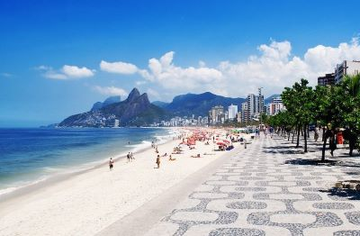

Descubre las Playas de Río de Janeiro
¡Bienvenido a la icónica ciudad de Río de Janeiro, hogar de algunas de las playas más famosas y hermosas del mundo! En Travel Partners Agency, te invitamos a sumergirte en la energía vibrante, el sol radiante y las aguas cristalinas de este destino de ensueño.
Atractivos Turísticos
-
Playa de Copacabana
Disfruta del ambiente animado y las vistas panorámicas en una de las playas más emblemáticas de Río. Con su larga extensión de arena dorada, es perfecta para tomar el sol, practicar deportes acuáticos y disfrutar de deliciosos cócteles en los bares de la orilla.
-
Playa de Ipanema
Sumérgete en el glamour y la belleza en la famosa Playa de Ipanema. Conocida por su estilo de vida elegante y sus impresionantes puestas de sol, esta playa es ideal para relajarse, practicar surf y observar a la gente desde la famosa acera de la playa.
 -
Morro Dois Irmãos
Haz una excursión hasta la cima de este icónico cerro para disfrutar de vistas panorámicas espectaculares de Río de Janeiro y sus playas. El sendero hasta la cima ofrece una experiencia única de naturaleza y aventura en medio de la ciudad.
Itinerario de 5 días y 4 noches
-
Día 1: Llegada a Río de Janeiro
-
1. Llegada al aeropuerto internacional de Río de Janeiro y traslado al hotel.
-
2. Tarde libre para relajarse en la playa de Copacabana y explorar los alrededores.
-
-
Día 2: Exploración de Copacabana e Ipanema
-
1. Mañana de relax en la playa de Copacabana.
-
2. Tarde para explorar la vibrante zona de Ipanema, incluyendo la famosa acera de la playa y sus tiendas y restaurantes.
-
-
Día 3: Excursión al Morro Dois Irmãos
-
1. Excursión de medio día al Morro Dois Irmãos, con caminata hasta la cima para disfrutar de vistas panorámicas de Río y sus playas.
-
2. Tarde libre para disfrutar de actividades opcionales como surf o paddleboard.
-
-
Día 4: Día de Playa y Gastronomía
-
1. Día de relax en la playa de Ipanema, con tiempo para nadar, tomar el sol y disfrutar de la escena playera.
-
2. Cena en un restaurante local para probar la deliciosa gastronomía brasileña, incluyendo platos típicos como la feijoada y la caipirinha.
-
-
Día 5: Despedida de Río de Janeiro
-
1. Mañana libre para compras de último momento o actividades opcionales.
-
2. Traslado al aeropuerto para el vuelo de regreso.
-
Costo del Viaje
El costo del viaje puede variar dependiendo de las preferencias individuales y las opciones de alojamiento seleccionadas. Sin embargo, nuestro paquete básico de 5 días y 4 noches incluye:
-
1. Traslados desde y hacia el aeropuerto.
-
2. Alojamiento en hoteles de calidad en la zona de Copacabana o Ipanema.
-
3. Excursiones mencionadas en el itinerario.
-
4. Guías locales expertos.
Para obtener un presupuesto personalizado y más detalles sobre opciones de alojamiento, actividades adicionales y servicios complementarios, no dudes en contactarnos. Estamos aquí para hacer de tu viaje a las playas de Río de Janeiro una experiencia inolvidable. ¡Reserva tu aventura hoy con Travel Partners Agency!